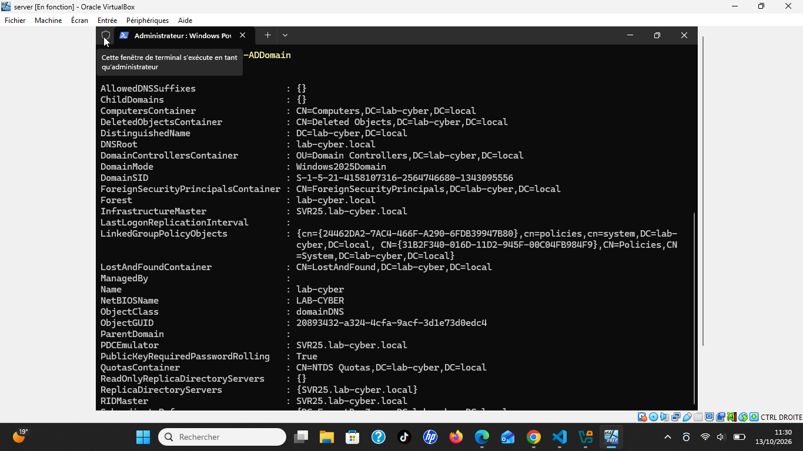
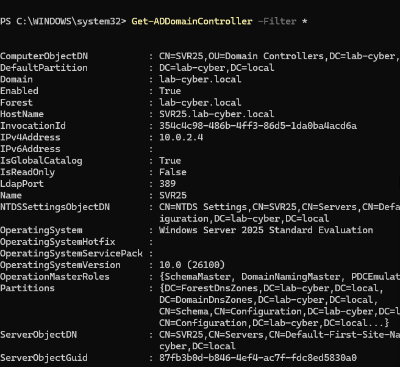
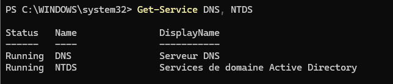

HOMELAB · ACTIVE DIRECTORY
Conception et sécurisation d’un domaine Windows
Mise en place et étude d’un environnement Active Directory pour pratiquer l’administration des identités, des services réseau et des mécanismes de sécurité Windows.
01 — Objectifs
- Comprendre le fonctionnement d’Active Directory Domain Services.
- Administrer les utilisateurs, groupes et ressources du domaine.
- Vérifier la configuration DNS et l’intégration du poste client.
- Étudier les paramètres de sécurité SMB et LDAP.
02 — Environnement technique
Le laboratoire s’appuie sur un contrôleur de domaine Windows Server 2025 qui héberge AD DS et DNS pour le domaine lab-cyber.local.
Les captures affichent des paramètres issus de l’environnement de laboratoire. Les adresses et le nom de domaine sont présentés comme valeurs de ce lab, pas comme une infrastructure de production.
03 — Démarche technique
- Préparer le serveur et sa configuration réseau.
- Installer et configurer le rôle Active Directory.
- Configurer le domaine, DNS et les objets nécessaires.
- Vérifier les services et la résolution des noms.
- Examiner les paramètres de sécurité SMB et LDAP lorsque les preuves sont disponibles.
- Documenter les résultats et les corrections effectivement réalisées.
04 — Résultats et preuves




Les captures confirment les informations du domaine, le contrôleur de domaine, l’état des services DNS/NTDS et la configuration DNS affichée. Elles ne remplacent pas des preuves séparées de tests d’authentification, de GPO ou de sécurisation SMB/LDAP.
05 — Suites et bilan
Ce laboratoire permet de pratiquer l’administration d’un domaine Windows et d’aborder la sécurisation des services d’identité. Les prochaines étapes peuvent inclure l’ajout d’un poste client, la validation des GPO, des tests DNS détaillés et une vérification des politiques de sécurité.
Les suites proposées ne sont pas présentées comme réalisées tant qu’une capture ou un résultat de commande ne les démontre pas.